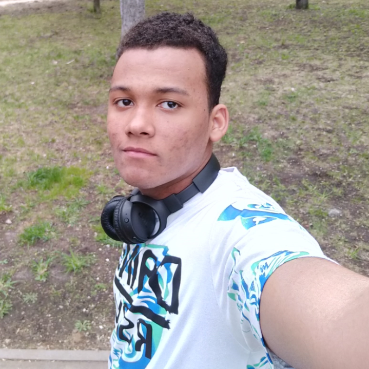

Contact
Adresse
Moscou,Russie
Telephone
+7-920-682-74-43
Email
opmadou@gmail.com
A Propos De Moi
Étudiant de seconde année a l'université de technologie de Moscou, je suis un passionné de programmation . Étant de nature débrouillarde, je me suis formé au développement web, a travers des cours en ligne , notamment ceux d'Openclassrooms. J'ai acquis des compétences me donnant la possibilité de réaliser des projets complexes. Aujourd'hui dans le but d'obtenir de l'expérience, je suis à la recherche de projets sérieux au sein d'une entreprise. Donc si vous avez besoin de développer un site web dynamique, des features pour une application web, je suis à votre disposition)